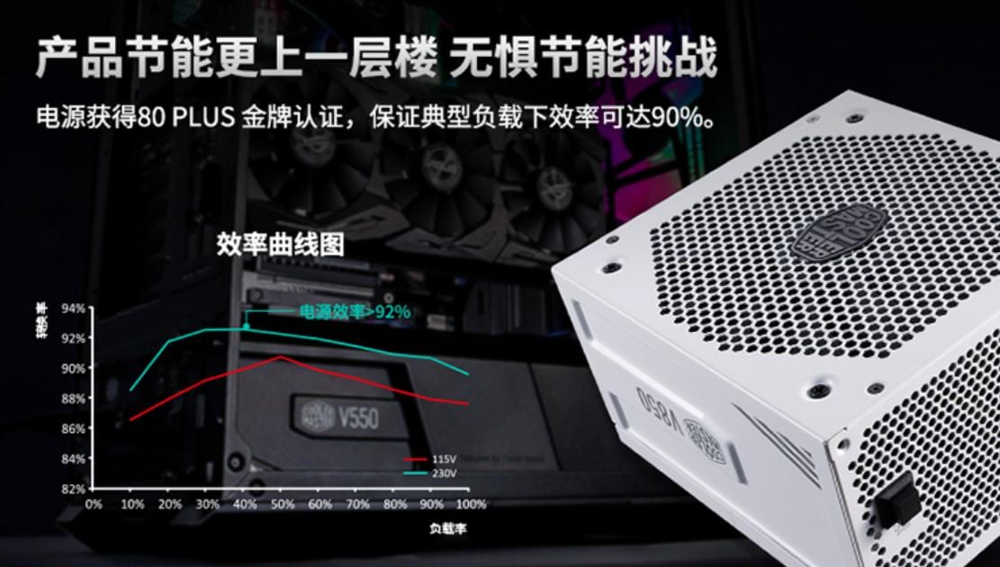

酷冷至尊 V850 GOLD V2

酷冷 V 金牌系列的 850W 主力，全日系电容配 FDB 温控风扇，输出规格扎实且价格克制，性价比突出，适合预算有限但不愿在电源上妥协的装机用户。
客观评测
V850 GOLD V2 额定 850W，+12V 单路输出 70.8A，采用全日系电容并通过 80PLUS 金牌认证，转换效率约 90%。全模组接口包括 2 个 CPU 4+4pin、4 个 PCIe 6+2pin 与 8 个 SATA，覆盖主流高端配置。120mm FDB 风扇配温控电路，低负载降速运行；六重保护功能齐全（OCP/OVP/OPP/SCP/OTP/UVP），10 年质保。140mm 机身长度对紧凑中塔也较友好。
主观点评
V850 GOLD 是那种把钱花在刀刃上的电源：全日系电容、金牌效率、十年质保，价格却比一线旗舰便宜一截。日常使用完全合格，静音表现中规中矩——轻负载安静，高负载时风扇声明显一些，但在机箱里并不扰人。如果你更看重实际输出品质而不在意品牌光环，它是非常务实的选择，把省下的预算加到显卡上更香。
优点与不足
- 全日系电容，价格却很克制
- 十年质保与完善保护电路
- 140mm 短机身兼容性好
- 高负载风扇噪音略明显
- 品牌高端形象不及海韵、海盗船
参数规格
| 额定功率 | 850W |
|---|---|
| 模组 | 全模组 |
| 80PLUS | 金牌 |
| 风扇 | 120mm FDB 风扇（智能温控） |
| +12V 输出 | 单路 70.8A（850W） |
| 规范 | ATX 12V / EPS 12V |
| 接口 | 2×CPU 4+4pin、4×PCIe 6+2pin、8×SATA |
| 电容 | 全日系电容 |
| 保护 | OCP/OVP/OPP/SCP/OTP/UVP |
| 尺寸 | 约 150×86×140mm |
| 散热 | 温控电路，支持低负载降速 |
| 质保 | 10 年质保 |